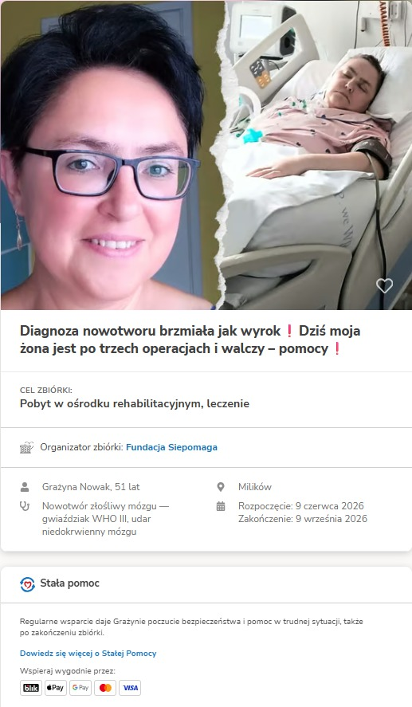
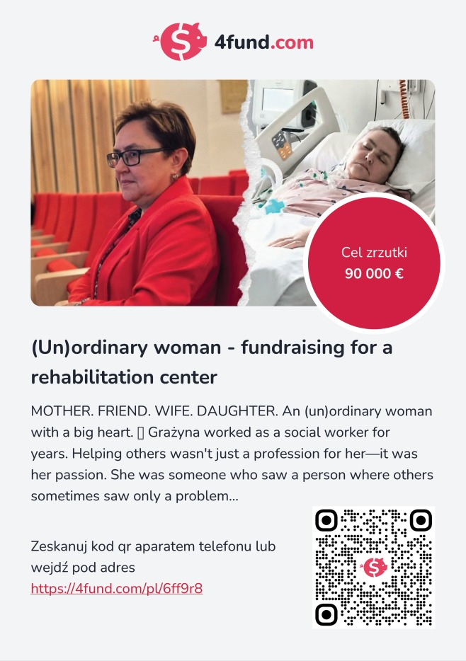

🇵🇱 Official Polish Platform
Siepomaga
Official foundation fundraiser for Grażyna's treatment and rehabilitation.
Support via Siepomaga →
A Documentary of Resilience
A mother's fight.
A family's strength.
A community's support.
Grażyna is a wonderful, helpful woman — and a devoted wife. For many years she worked at the Social Welfare Center (MOPS), spending her days supporting people in need.
She is known to those around her for her warmth, her patience, and her quiet dedication to others. Whether at work or at home, Grażyna gave generously — to colleagues, to neighbours, to anyone who needed someone in their corner.
She is a mother. She is a wife. She is a friend to many. She is the kind of person who shows up. That is who Grażyna was before February 2026 — and that is still who she is today.
"The cancer diagnosis sounded like a death sentence. Today my wife has had three surgeries and is fighting." — Thomas, her husband
Every journey has a beginning. Every step forward — no matter how small — matters.
Increasingly frequent headaches and persistent tiredness. Grażyna and Thomas thought it might be overwork. They had no idea what was coming.
Grażyna collapsed unexpectedly. An ambulance. An emergency room. Initial suspicion of stroke. Then a transfer to neurosurgery — and a diagnosis that changed everything.
Doctors confirmed: malignant brain tumor, WHO Grade III Astrocytoma. A serious, life-altering diagnosis. The family held together and faced it head on.
Grażyna underwent a very serious operation to remove the tumor. It initially appeared to be a success. On April 22nd, she was discharged home.
Shortly after returning home, cerebrospinal fluid began leaking, requiring emergency surgery. A serious infection followed — leading to a life-saving third procedure.
Grażyna is now in the neurosurgery ward, connected to a respirator. Some days she sleeps. Other days she squeezes Thomas's hand. She is still here. She is still fighting.
The goal: a specialist rehabilitation center. With the right care, Grażyna can regain her former life. That future is what this journey is working toward.

Thomas has been at Grażyna's side through each surgery, each setback, each small victory. He has held her hand when she could barely respond, and celebrated every moment she has squeezed back.
Love like this does not require words. It shows up. It stays. It does not give up.
Today, this journey is no longer carried by one person alone. What began as a husband's determination has become a shared effort embraced by family, friends, neighbors, volunteers, and compassionate supporters from the community. This website exists to tell Grażyna's story, to honor the people standing beside her, and to remind us that even in the most difficult moments, hope grows stronger when it is shared.
Family video update
A vlog update from Thomas will appear here.
Grażyna remains in the neurosurgery ward. The family visits daily. She sometimes shakes Thomas's hand — those moments carry the whole family through.
The family will share updates here as Grażyna's recovery continues.
21 czerwca 2026 o godzinie 18:00 w Nowogrodźcu odbędzie się licytacja charytatywna przedmiotów przekazanych przez darczyńców. Cały dochód zostanie przeznaczony na leczenie, rehabilitację oraz dalszą walkę Grażyny o zdrowie.
Przedmioty przekazane przez ludzi, którzy chcą pomóc. Każdy przedmiot niesie wartość. Dla Grażyny oznacza ona szansę.
Każda wylicytowana rzecz ma znaczenie.
Każda złotówka przybliża Grażynę do powrotu do zdrowia.
Razem możemy więcej.
"Every recovery begins with hope."
"Be strong and take heart,
all you who hope in the Lord."
— Psalm 31:24
"Every act of kindness helps carry someone forward."
"Hope grows stronger when shared."
Know Grażyna? Have a word of encouragement?
Share this page and let her know the community is with her.
Grażyna needs specialist rehabilitation, ongoing care, and treatment. The costs are significant — too significant for one family to carry alone.
A small donation, a shared post, a message to a friend — all of it helps.
Choose the official fundraising platform that is most convenient for you.

Official foundation fundraiser for Grażyna's treatment and rehabilitation.
Support via Siepomaga →
Alternative international support option with QR and card payment access.
Support via 4Fund →This website does not process payments. All financial support goes directly through the official fundraiser platforms linked above.